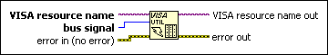
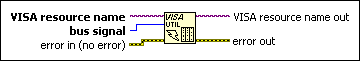

VISA Assert Utility Signal Function
Owning Palette: Bus/Interface Specific Functions
Requires: Base Development System
Asserts or deasserts the specified utility bus signal.

 Add to the block diagram Add to the block diagram |
 Find on the palette Find on the palette |
Owning Palette: Bus/Interface Specific Functions
Requires: Base Development System
Asserts or deasserts the specified utility bus signal.

| Add to the block diagram |
Find on the palette |
 |
VISA resource name specifies the resource to be opened. The VISA resource name control also specifies the session and class. | ||||||
 |
bus signal specifies the utility bus signal to assert. This input accepts the following values.
|
||||||
 |
error in describes error conditions that occur before this node runs. This input provides standard error in functionality. | ||||||
 |
VISA resource name out is a copy of the VISA resource name that VISA functions return. | ||||||
 |
error out contains error information. This output provides standard error out functionality. |
This function can assert the SYSFAIL or SYSRESET utility bus interrupts on the VXI backplane.
 | Note VISA Assert Utility Signal does not accept VISA sessions of class Instr. The VISA session must be of class VXI/GPIB-VXI Backplane or VXI Servant. |